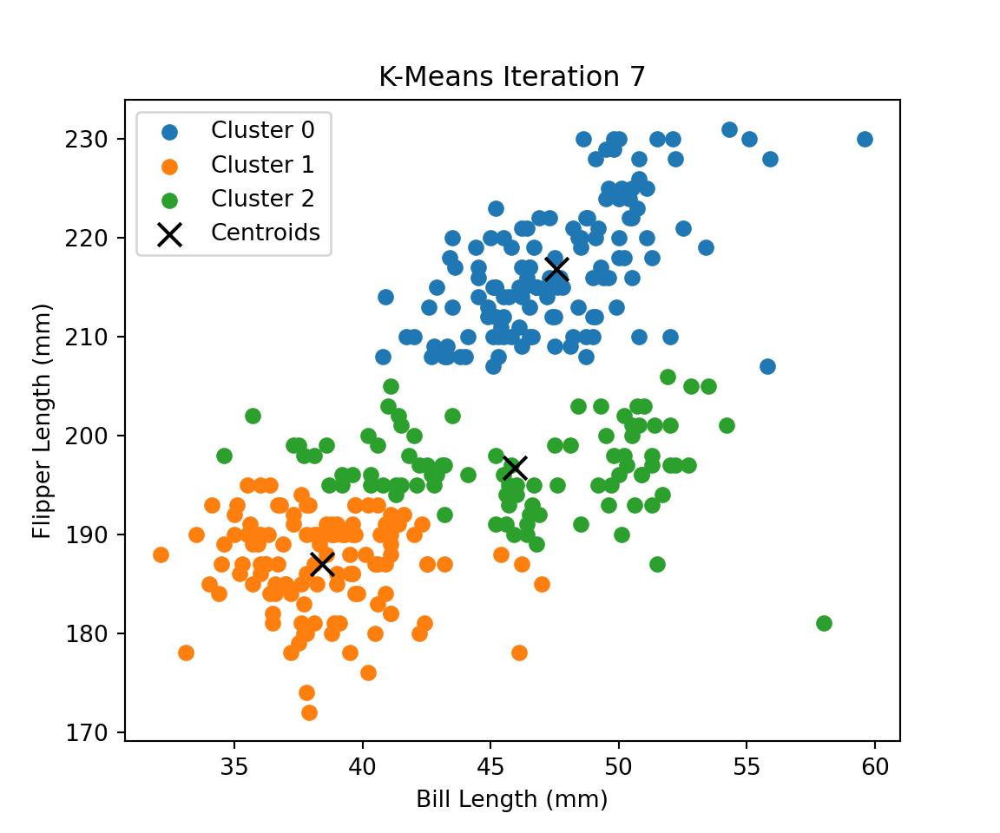
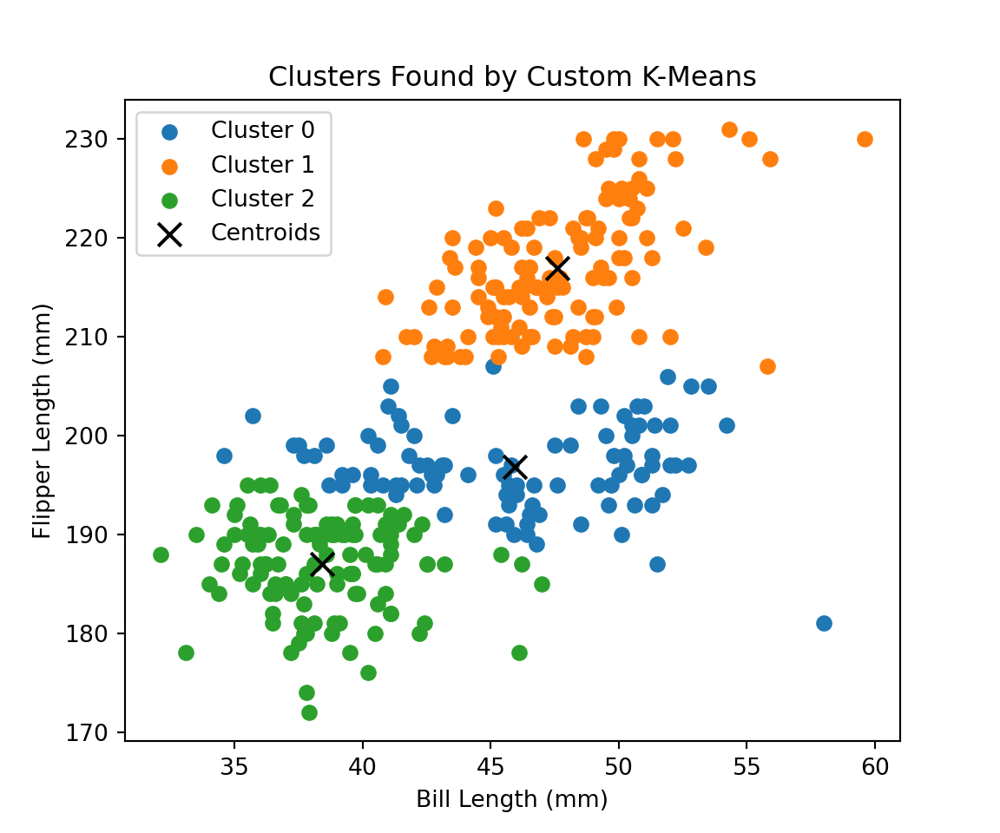

In this post, I implement the K-Means clustering algorithm from scratch and apply it to the Palmer Penguins dataset.
The goal is to:
Write the K-Means algorithm by hand in Python.
Visualize how it works on real data.
Compare it with Python’s built-in KMeans implementation.
Evaluate model performance using within-cluster sum of squares (WCSS) and silhouette scores.
Determine the “right” number of clusters.
We’ll use two features: bill length and flipper length — a natural fit for 2D visualization of clustering in action.
How the Algorithm Works:
K-Means is an unsupervised learning algorithm that partitions data into K clusters. The algorithm seeks to minimize the within-cluster sum of squares (WCSS) and follows these steps:
Randomly initialize K centroids.
Assign each data point to the nearest centroid.
Recompute each centroid based on current cluster assignments.
Repeat until centroids converge or max iterations is reached.
Implementing K-Means in Python:
We define functions to initialize centroids randomly, assign each point to the nearest centroid, update centroids using the mean of assigned points, and iterate until convergence.
#| code-fold: true#| code-summary: "Show code"import seaborn as snsimport pandas as pdpenguins = sns.load_dataset("penguins").dropna(subset=["bill_length_mm", "flipper_length_mm"])X = penguins[["bill_length_mm", "flipper_length_mm"]].valuesplt.figure(figsize=(6, 5))plt.scatter(X[:, 0], X[:, 1], c='gray', edgecolor='black')plt.xlabel("Bill Length (mm)")plt.ylabel("Flipper Length (mm)")plt.title("Palmer Penguins: Bill Length vs Flipper Length")plt.show()
Visualizing the Algorithm
To better understand how K-Means converges, I modified the algorithm to store the centroids and cluster labels at each iteration.
Executing such visualization here:
Show code
from matplotlib.animation import FuncAnimationdef kmeans_with_plot(X, k, max_iters=10): centroids = initialize_centroids(X, k) history = []for i inrange(max_iters): labels = assign_clusters(X, centroids) history.append((centroids.copy(), labels.copy())) new_centroids = update_centroids(X, labels, k)if np.allclose(new_centroids, centroids):break centroids = new_centroids history.append((centroids.copy(), labels.copy()))return history# Run it and store the stepshistory = kmeans_with_plot(X, k=3)# Animate itfig, ax = plt.subplots(figsize=(6, 5))def animate(i): ax.clear() centroids, labels = history[i]for j inrange(len(centroids)): ax.scatter(X[labels == j, 0], X[labels == j, 1], label=f"Cluster {j}") ax.scatter(centroids[:, 0], centroids[:, 1], c='black', marker='x', s=100, label='Centroids') ax.set_title(f"K-Means Iteration {i}") ax.set_xlabel("Bill Length (mm)") ax.set_ylabel("Flipper Length (mm)") ax.legend()ani = FuncAnimation(fig, animate, frames=len(history), interval=1000, repeat=False)# Save the animation to your output folder (this file must exist in same dir)ani.save("kmeans_penguins_animation.mp4", writer='ffmpeg')

Each frame above shows the K-Means algorithm as it reassigns data points to the nearest centroid, moves centroids to the mean of their assigned points, and gradually stabilizes and stops updating.
This visualization helps demonstrate how K-Means converges over a few iterations. It’s especially helpful for building intuition around how cluster boundaries emerge.
Show code
k =3centroids, labels = kmeans(X, k)plt.figure(figsize=(6, 5))for i inrange(k): cluster_points = X[labels == i] plt.scatter(cluster_points[:, 0], cluster_points[:, 1], label=f'Cluster {i}')plt.scatter(centroids[:, 0], centroids[:, 1], color='black', marker='x', s=100, label='Centroids')plt.xlabel("Bill Length (mm)")plt.ylabel("Flipper Length (mm)")plt.title("Clusters Found by Custom K-Means")plt.legend()plt.show()

We use the seaborn penguins dataset and select two continuous variables: bill length and flipper length.
This makes it easy to visualize clustering in 2D.
We choose k=3 and run our K-Means function.
Each cluster is color-coded, and the final centroids are marked with black X’s.
Compare to sklearn’s KMeans
Here’s a comparison using sklearn’s KMeans. The cluster separation and centroid locations are nearly identical, validating our implementation.
Show code
from sklearn.cluster import KMeanskmeans_sklearn = KMeans(n_clusters=3, random_state=42).fit(X)labels_sklearn = kmeans_sklearn.labels_centroids_sklearn = kmeans_sklearn.cluster_centers_plt.figure(figsize=(6, 5))for i inrange(3): plt.scatter(X[labels_sklearn == i, 0], X[labels_sklearn == i, 1], label=f'Cluster {i}')plt.scatter(centroids_sklearn[:, 0], centroids_sklearn[:, 1], color='red', marker='x', s=100, label='Centroids')plt.title("Clusters from sklearn KMeans")plt.xlabel("Bill Length (mm)")plt.ylabel("Flipper Length (mm)")plt.legend()plt.show()
Important Metrics
We calculate:
Within-Cluster Sum of Squares (WCSS): Lower is better; the “elbow” suggests the optimal k.
Silhouette Score: Measures cohesion and separation; higher is better.
Show code
from sklearn.metrics import silhouette_scorewcss = []silhouettes = []K_range =range(2, 8)for k in K_range: km = KMeans(n_clusters=k, random_state=42).fit(X) wcss.append(km.inertia_) silhouettes.append(silhouette_score(X, km.labels_))plt.figure()plt.plot(K_range, wcss, marker='o')plt.title("Elbow Plot (WCSS)")plt.xlabel("Number of Clusters (K)")plt.ylabel("Within-Cluster Sum of Squares")plt.show()
Show code
plt.figure()plt.plot(K_range, silhouettes, marker='s')plt.title("Silhouette Score vs K")plt.xlabel("Number of Clusters (K)")plt.ylabel("Silhouette Score")plt.show()
In this case, both metrics suggest k=3 is a strong choice — consistent with our earlier result.
Result
I implemented K-Means from scratch and applied it to the Palmer Penguins dataset. I also compared my implementation to the built-in version from sklearn, and evaluated the results using WCSS and silhouette scores.
The optimal number of clusters based on both metrics appears to be 3, which aligns well with the natural grouping of the data.
This hands-on implementation helped solidify my understanding of clustering mechanics — and provided great visuals for exploring the algorithm step-by-step.
Key Drivers Analysis: What Influences Satisfaction
In this section, I replicate a key drivers analysis from class to explore which perceptual attributes most strongly explain satisfaction for Brand 1.
The dataset includes survey responses where each row represents a customer and the columns include:
A set of perception variables (e.g., trust, ease of use, appeal)
A satisfaction score (the target variable we aim to explain)
I perform a Key Drivers Analysis using six different variable importance metrics, each of which offers a unique lens for interpreting what matters most:
Pearson Correlation
Standardized Regression Coefficients
Usefulness (R² from univariate regressions)
Shapley Values (LMG)
Johnson’s Relative Weights
Random Forest Gini Importance
This helps compare statistical, machine learning, and variance decomposition approaches to identifying the strongest drivers of customer satisfaction.
For simplicity and clarity, I focus on Brand 1 only.
Let’s load and filter the data.
Load and filter Brand 1 data
import pandas as pd# Load the datasetdf = pd.read_csv("data_for_drivers_analysis.csv")# Filter to just Brand 1df_brand1 = df[df["brand"] ==1].copy()# Define predictors and targetX = df_brand1.drop(columns=["brand", "id", "satisfaction"])y = df_brand1["satisfaction"]
Pearson Correlation
The Pearson correlation measures the linear relationship between each perception variable and satisfaction. It ranges from -1 to +1: - A positive value means the perception increases as satisfaction increases. - A larger absolute value means a stronger relationship.
This is a simple and intuitive measure of importance, though it doesn’t account for interactions or multicollinearity.
Compute Pearson correlations
import numpy as npfrom IPython.display import display# Compute correlations between each column in X and ypearson_corr = X.corrwith(y)# Convert to DataFrame for later mergingpearson_df = pearson_corr.to_frame(name="Pearson Correlation")pearson_df = pearson_df.sort_values(by="Pearson Correlation", ascending=False)display(pearson_df)
Pearson Correlation
appealing 0.213676
rewarding 0.201421
easy 0.174373
impact 0.170194
trust 0.161155
popular 0.150364
service 0.146953
differs 0.092293
build 0.048046
Standardized Regression Coefficients
This method involves fitting a linear regression on standardized variables (z-scores). Standardizing ensures that all predictors are on the same scale, so we can directly compare the magnitude of their coefficients.
Larger coefficients (in absolute value) indicate variables that contribute more to predicting satisfaction. This approach adjusts for collinearity better than Pearson correlation, but it still assumes a linear and additive relationship.
Below are the standardized coefficients for each perception variable:
Standardized regression coefficients
from sklearn.linear_model import LinearRegressionfrom sklearn.preprocessing import StandardScaler# Standardize X and yscaler_X = StandardScaler()scaler_y = StandardScaler()X_std = scaler_X.fit_transform(X)y_std = scaler_y.fit_transform(y.values.reshape(-1, 1)).ravel()# Fit linear regressionlr = LinearRegression()lr.fit(X_std, y_std)
LinearRegression()
In a Jupyter environment, please rerun this cell to show the HTML representation or trust the notebook. On GitHub, the HTML representation is unable to render, please try loading this page with nbviewer.org.
LinearRegression()
Standardized regression coefficients
# Store coefficientsstd_coef_df = pd.DataFrame({"Standardized Coefficient": lr.coef_}, index=X.columns).sort_values(by="Standardized Coefficient", ascending=False)display(std_coef_df)
Standardized Coefficient
rewarding 0.127456
appealing 0.126563
impact 0.082937
popular 0.057477
trust 0.047231
easy 0.045333
service 0.041731
differs -0.063249
build -0.134827
Usefulness: Univariate R²
“Usefulness” is measured by the R² value from a simple linear regression using each predictor individually. It tells us how much of the variance in satisfaction can be explained by that predictor alone — without adjusting for overlap with other variables.
This metric is easy to interpret and useful for identifying high-signal variables, though it can be misleading if predictors are strongly correlated with each other.
Here are the results for Brand 1:
Univariate R² (Usefulness)
from sklearn.linear_model import LinearRegressionr2_scores = {}for col in X.columns: model = LinearRegression() model.fit(X[[col]], y) r2_scores[col] = model.score(X[[col]], y)
LinearRegression()
In a Jupyter environment, please rerun this cell to show the HTML representation or trust the notebook. On GitHub, the HTML representation is unable to render, please try loading this page with nbviewer.org.
Usefulness (R²)
appealing 0.045657
rewarding 0.040571
easy 0.030406
impact 0.028966
trust 0.025971
popular 0.022609
service 0.021595
differs 0.008518
build 0.002308
Summary of the First Three Metrics
So far, we’ve explored three statistical perspectives on what drives satisfaction:
Pearson Correlation gives us a simple view of linear relationships.
Standardized Coefficients control for overlap between variables in a multivariate setting.
Usefulness (R²) shows how much variance each variable explains on its own.
Despite their different methodologies, the same few variables consistently emerge as top drivers:
appealing and rewarding show up at the top in all three.
impact, easy, and trust are also moderately strong across metrics.
build scores low across the board — potentially indicating that customers don’t associate this dimension with satisfaction.
This early convergence increases confidence in our results — though we’ll validate further with machine learning and variance decomposition techniques next.
Shapley Values (LMG Decomposition in R)
To correctly run Shapley value (LMG) decomposition for a linear regression model, I used R’s relaimpo package. This avoids the misbehavior I encountered using Python’s dominance-analysis package, which defaults to logistic regression.
The table below shows the relative importance (as a % of R²) each predictor contributes based on averaging over all possible model combinations.
result$lmg
trust 0.08414815
build 0.07901473
differs 0.02771814
easy 0.09853352
appealing 0.22634684
rewarding 0.21443335
popular 0.08908973
service 0.06453611
impact 0.11617944
To accurately compute Shapley values (LMG decomposition) for a linear model, I used the relaimpo package in R. This method attributes each predictor’s average contribution to the model’s R² by considering all possible combinations of variable orderings.
Here are the results for Brand 1:
Variable
LMG (Relative Importance)
appealing
0.226
rewarding
0.214
impact
0.116
easy
0.099
trust
0.084
popular
0.089
build
0.079
service
0.065
differs
0.028
Together, these add up to 1.0 (100% of model R²), showing how each perception variable contributes to explaining satisfaction.
As with earlier metrics, appealing and rewarding again stand out as the most important drivers — further validated by this comprehensive decomposition.
Johnson’s Relative Weights
Johnson’s Relative Weights decompose the model’s R² into contributions from each predictor by first transforming them into orthogonal variables (uncorrelated components), then mapping those contributions back.
This approach is computationally efficient and handles multicollinearity well — while still providing results on the same scale as R².
Random Forest Variable Importance (Mean Decrease in Gini)
Random forests measure the importance of each variable by evaluating how much it reduces node impurity (typically using the Gini index) across all trees.
This metric is widely used in machine learning because it can capture nonlinear interactions and doesn’t assume linearity or independence between variables.
Random Forest Importance (Gini decrease)
from sklearn.ensemble import RandomForestRegressorimport pandas as pd# Fit Random Forestrf = RandomForestRegressor(n_estimators=500, random_state=42)rf.fit(X, y)
In a Jupyter environment, please rerun this cell to show the HTML representation or trust the notebook. On GitHub, the HTML representation is unable to render, please try loading this page with nbviewer.org.
# Get feature importancesrf_importances = rf.feature_importances_# Format into a DataFramerf_df = pd.DataFrame({"Random Forest (Gini Importance)": rf_importances}, index=X.columns).sort_values(by="Random Forest (Gini Importance)", ascending=False)display(rf_df)
Random Forest (Gini Importance)
appealing 0.122222
rewarding 0.121301
build 0.117583
impact 0.113222
popular 0.111513
service 0.110354
trust 0.102015
easy 0.101639
differs 0.100151
Summary Table: Key Driver Importance Across Methods
The table below compares all six variable importance metrics used to evaluate the impact of perception attributes on customer satisfaction for Brand 1. Each column represents a different method:
Pearson Correlation: Simple linear relationship between each predictor and satisfaction.
Standardized Coefficient: Beta weights from a standardized linear regression model.
Usefulness (R²): The variance in satisfaction explained by each predictor individually.
Shapley Value (LMG): A fair-share decomposition of the full model’s R² using all variable combinations (via R’s relaimpo).
Johnson’s Relative Weights: Partitioned R² based on orthogonal transformations to adjust for multicollinearity.
Random Forest (Gini Importance): A machine learning measure based on how much each variable reduces node impurity across all trees.
This comparative view highlights which variables emerge consistently as strong predictors — offering both interpretability and robustness across statistical and machine learning frameworks.
Summary Table of Variable Importance
# Recreate lmg_df from known values (previous output pasted manually for this run)lmg_values = {"trust": 0.08414815,"build": 0.07901473,"differs": 0.02771814,"easy": 0.09853352,"appealing": 0.22634684,"rewarding": 0.21443335,"popular": 0.08908973,"service": 0.06453611,"impact": 0.11617944}lmg_df = pd.DataFrame.from_dict(lmg_values, orient='index', columns=["Shapley Value (LMG)"])# Now combine all metrics into the final summary tablesummary_df = ( pearson_df .join(std_coef_df) .join(usefulness_df) .join(lmg_df) .join(johnson_df) .join(rf_df))# Round for readabilitysummary_df_rounded = summary_df.round(3)from IPython.core.display import HTMLHTML(summary_df_rounded.to_html(classes="table table-striped"))
Pearson Correlation
Standardized Coefficient
Usefulness (R²)
Shapley Value (LMG)
Johnson's Relative Weight
Random Forest (Gini Importance)
appealing
0.214
0.127
0.046
0.226
0.227
0.122
rewarding
0.201
0.127
0.041
0.214
0.230
0.121
easy
0.174
0.045
0.030
0.099
0.029
0.102
impact
0.170
0.083
0.029
0.116
0.097
0.113
trust
0.161
0.047
0.026
0.084
0.032
0.102
popular
0.150
0.057
0.023
0.089
0.047
0.112
service
0.147
0.042
0.022
0.065
0.025
0.110
differs
0.092
-0.063
0.009
0.028
0.057
0.100
build
0.048
-0.135
0.002
0.079
0.257
0.118
Conclusion: What Drives Satisfaction for Brand 1?
AcAcross all six importance metrics, a consistent pattern emerges:
Top Drivers: appealing and rewarding rank among the highest across every method — from simple correlation to machine learning and variance decomposition. These two attributes are strong, reliable predictors of customer satisfaction for Brand 1.
Secondary Influencers: impact, easy, and trust show moderate but consistent importance across several metrics. These may act as supporting attributes — not always dominant alone, but valuable when combined with top drivers.
Method Sensitivities: build and differs receive lower rankings in linear metrics (like R² and standardized coefficients), but perform better in Random Forest and Johnson’s weights, hinting at non-linear effects or interaction patterns not captured by traditional regression.
Model Agreement:
The agreement between different techniques — both statistical and algorithmic — adds confidence to the overall result:
> Brand 1’s satisfaction is primarily driven by how appealing and rewarding customers find the product or experience.
This multi-method approach ensures that insights are robust, not artifacts of a single modeling technique, and provides a richer understanding of what truly matters to customers.